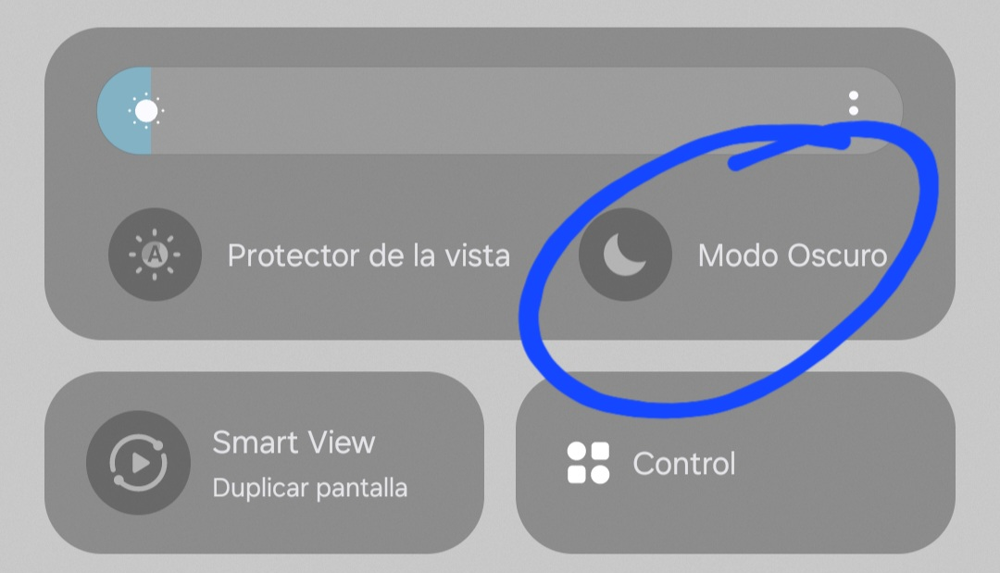
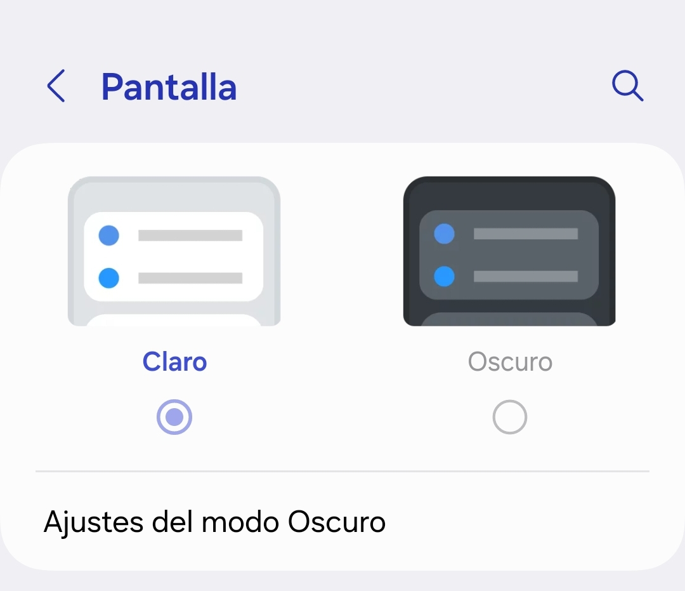
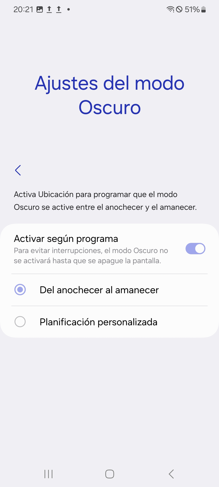

Cierre de aplicaciones, modo oscuro, perfiles de optimización y más
Cierre de Aplicaciones
El cierre de aplicaciones va muy bien para terminar procesos y tareas que en ese momento son innecesarias y que suelen gastar batería.
Para cerrar esos procesos (aplicaciones) que se están ejecutando, solamente tienes que ir a lo que se le llama en Android "Aplicaciones recientes"
Para acceder a ese menú o partado es muy fácil. Si tienes tu terminal configurado por botones como estos de aquí , lo único que tienes que hacer es darle al bóton de los 3 palitos y ya.
Si vas con gestos, solamente debes de deslizar desde el medio-inferior de tu terminal hasta la mitad, y verás que se te abrirá algo igual a esto:
Modo oscuro
Para poder poner el modo oscuro, tenemos 2 opciones para activarlo, en este caso, mostraré como se hace en OneUI 6 y OneUI 7
En OneUI 6:
La primera opción mas fácil y rápida es desde el panel de control.
En caso que no sepais como acceder al panel de control, lo único que debes de hacer es deslizar desde la parte superior del terminal hacia abajo, y veréis que se desplegará lo mismo que sale en la imágen.
Ya una vez en el panel de control, volveréis a deslizar hacia abajo, partiendo desde mas o menos la mitad de la pantalla, entonces veréis que se expandirá el panel de control.
Si os fijáis en la parte de abajo vereís estos tres mismos recuadros que en la imágen que dejé abajo, y habrá una opción que pone Modo Oscuro, ya solo le dais ahí y automáticamente se pondrá todo en modo oscuro excepto el fondo de pantalla.

Otra forma de hacerlo, es desde la aplicación de Ajustes
Una vez que estéis dentro de la aplicación de Ajustes , buscareis la opción de Pantalla y entraremos en dicha opción
La primera cosa que encontrareis y que no es fácil de dejarla pasar es esta opción de aquí:

Fijaros que abajo de las dos opciones de Claro y Oscuro hay otra que pone Ajustes de modo oscuro
Esta opción, si entrais y la activais, la podreis configurar para que se active el modo oscuro cuando anochezca y que se desactive cuando amanezca:

En OneUI 7:
En OneUI 7 lo único que cambia, es el panel de control. En este caso solamente tendríais que deslizar desde la parte derecha del terminal de arriba hacia abajo
Si le dais a la Luna que hay al lado de la barra de brillo, se desactivará o activará el modo oscuro.
Para programar el encendido y el apagado automático es como en OneUI 6
Perfiles de optimización
Hay mucha gente que lleva mucho tiempo en Samsung, y aún sabe que hay una opción la cual te permite activar y esa opcción hace que si el movil necesita reiniciarse, lo hará.
¿Por qué va bien? Porque cada vez que reiniciais vuestros dispositivos, le estais eliminando la caché, que son datos innecesarios y que consumen batería y almacenamiento interno.
Para activar esa opción, tendreis que dirigiros a Ajustes y buscar este apartado y entrar:
Una vez esteis dentro de este apartado, bajareis y encontrareis una opción que ponga "Optimización automática" y entrais. Aparecereis en una pantalla como esta:
Como vereis, ya os hace ahí una breve explicación de lo que hace. También podeis conteplar de que abajo sale como que la opción está desactivada. (Cosa que el 90% tendreis esta opción desactivada [Como yo jaja])
Una vez entremos donde "Reinicio automático" nos saldrá una ventana idéntica a esta:
Pues aquí ya os encargais vosotros en como configuralo; cada vez que vuestro terminal lo necesite o de x día a x hora
Protección de la batería
Todos sabeis que la batería es el elemento más degradable de un terminal, y que dependiendo de su condicion de vida, puede durar mas o al contrario, no durar nada. Para evitar esa degradación, Samsung te da una opción para cuidar tu batería sin tener que estar equilibrandola ni nada.
Primero de todo, os tendreis que ir a Ajustes y obviamente entrar en dicha app
Ya que esteis dentro de Ajustes , buscaremos el apartado
 , lo único que tienes que hacer es darle al bóton de los 3 palitos y ya.
, lo único que tienes que hacer es darle al bóton de los 3 palitos y ya.